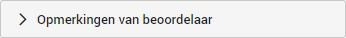
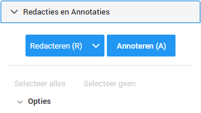
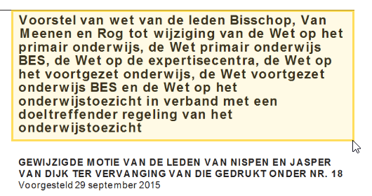
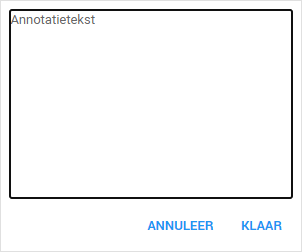

Belangrijk: Een annotatie wordt niet getoond wanneer u de documenten gaat produceren (opleveren). Annotaties zijn alleen zichtbaar voor gebruikers binnen ZyLAB.
U kunt in het bewerkingsdashboard ook opmerkingen plaatsen voor bijvoorbeeld uw collega. U kunt opmerkingen over het gehele document plaatsen in de Opmerkingen van beoordelaar. Daarnaast kunt u ook gericht in de tekst opmerkingen plaatsen door middel van de Annotaties.
Wanneer u een document aan het beoordelen bent vindt u aan de rechterzijde in uw scherm de opties tot het plaatsen van opmerkingen.

Hier vindt u een tekstvlak waar u uw opmerking in kwijt kunt. Wat u hier invult wordt afzonderlijk per document opgeslagen. Uw opmerking is dus alleen zichtbaar in het betreffende document waar u deze heeft geplaatst.
Naast het plaatsen van een opmerking onder Opmerkingen van beoordelaar kunt u ook zelf in het document een opmerking plaatsen. Dit wordt gedaan door middel van Annotaties. U vindt de knop Annoteren (A) onder Redacties en Annotaties.

Wanneer u de knop Annoteren (A) aanklikt kunt u een vlak trekken over de tekst waar u een opmerking over wilt plaatsen, vergelijkbaar met de actie als u een aflakking zou plaatsen.

U heeft nu een doorzichtig vlak (kleur kan verschillen per zaak) getrokken. Als u dit vlak selecteert en er daarna tweemaal op klikt opent zich een tekstvlak waar u uw opmerking kunt plaatsen.

|
|
Belangrijk: Een annotatie wordt niet getoond wanneer u de documenten gaat produceren (opleveren). Annotaties zijn alleen zichtbaar voor gebruikers binnen ZyLAB. |